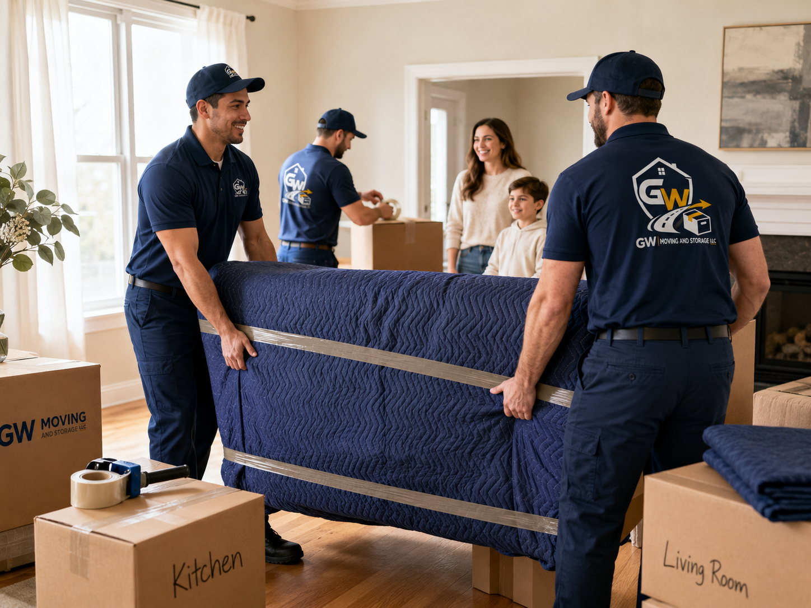
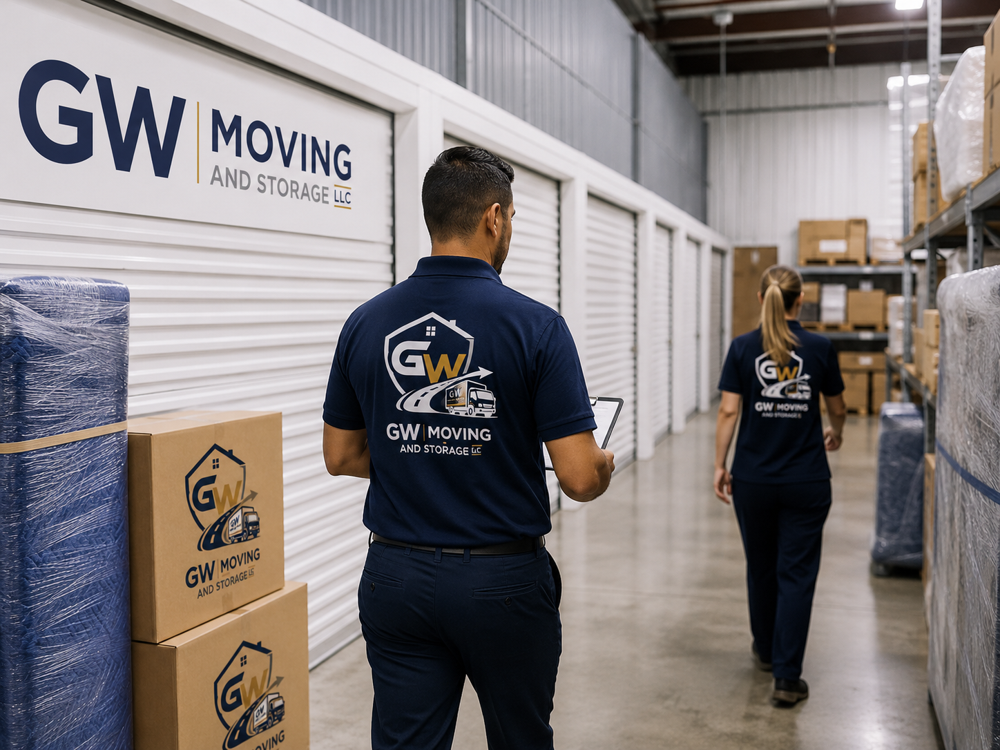
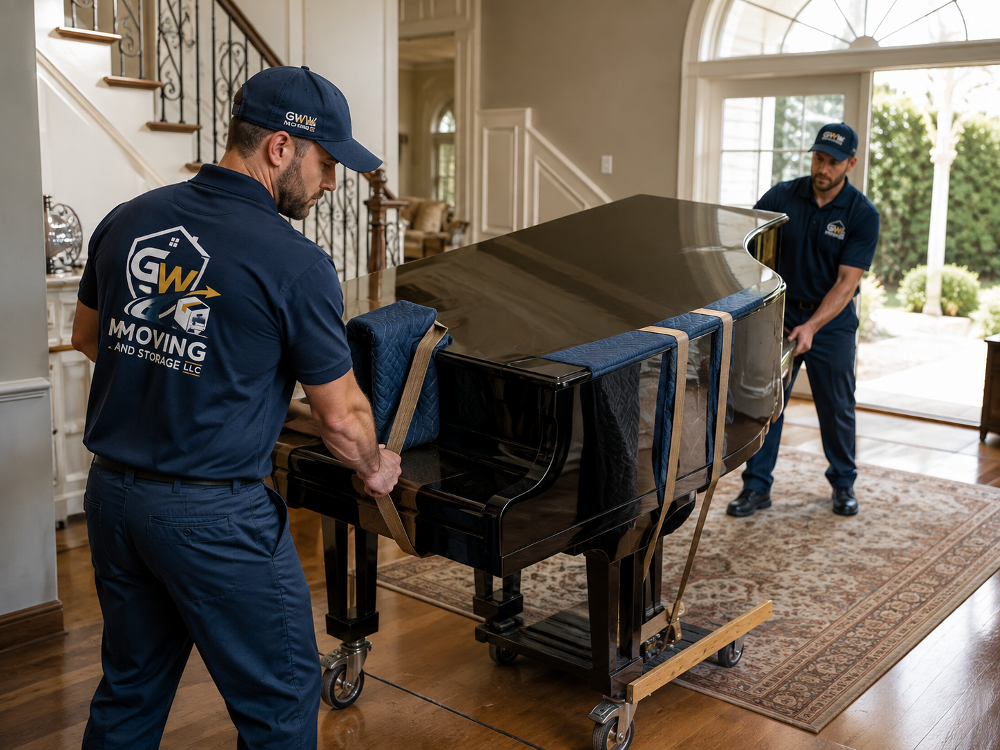
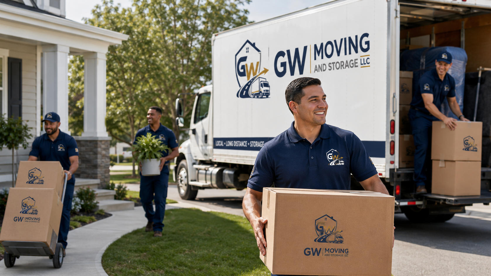

Residential Moving
Local moves, relocation planning, furniture protection, loading, unloading, and in-home placement support.
GW Moving and Storage LLC supports residential clients with a clean, professional experience—from everyday home moving to piano relocation and organized storage.

Local moves, relocation planning, furniture protection, loading, unloading, and in-home placement support.

Flexible short-term and ongoing storage for household goods, furniture, boxed items, and selected specialty belongings.

Specialized care for upright, baby grand, and grand pianos with focused equipment and protective handling.
Home, condo, and apartment moving within your area with professional loading and unloading.
Planning support for interstate or out-of-area relocations where timing and communication matter.
Protective wrapping and moving materials to help safeguard furniture and boxed items.
Careful handling support whether you need help at both ends or only for one stage of the move.
Flexible storage solutions when your next location is not immediately ready.
A higher-care approach for pianos and selected fragile or oversized items.

We built the piano section of this website as a clear specialty focus because pianos require planning, equipment, and care beyond ordinary furniture moving.
Move upright and grand pianos with padding, careful lifting strategy, and professional handling.
From home-to-home relocation to room-to-room movement and studio transfers, the process is treated with care.
Store your piano when timelines shift or when you need a secure interim solution before placement.